Less-17
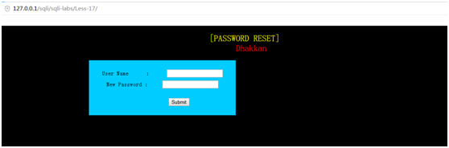
首先了解到本关是可以改密码，看一下源代码
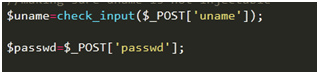
同样是接收我们输入的username和password，但是这里定义了一个check_input函数
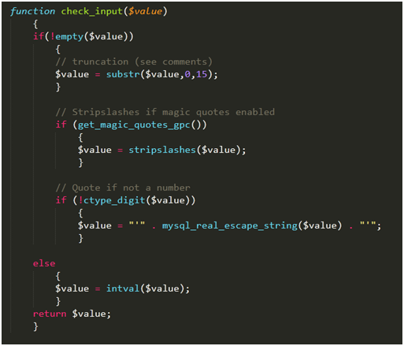
一步步分析这个函数
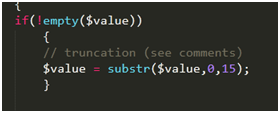
首先empty这个函数，如果输入值不为空，则返回是false，输入为空，返回true
我们输入的是一个字符串，判断为空的情况的字符串为“”和“0”，所以要执行if语句，则empty返回false，所以输入字符串不为“”和“0”时，截取字符串前十五位
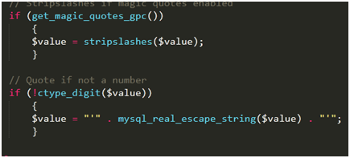
这两个if语句就起到了对输入特殊字符的转义的作用，get_magic_quotes_gpc()这个函数当系统有对特定字符转义时返回true，没有返回false，当有转义时，执行if语句，stripslashes()函数将转义字符丢弃，ctype_digit()函数判断当字符串值不为0或者正整数时返回false，则会将输入的字符串加上’’并且对特殊字符转义
我们首先先输入两个admin，可以看到提示修改密码成功，再看一下result.txt里面输入的值
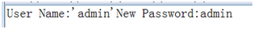
可以发现我们输入admin这个字符串两边被加了单引号，我们试试用户名admin’
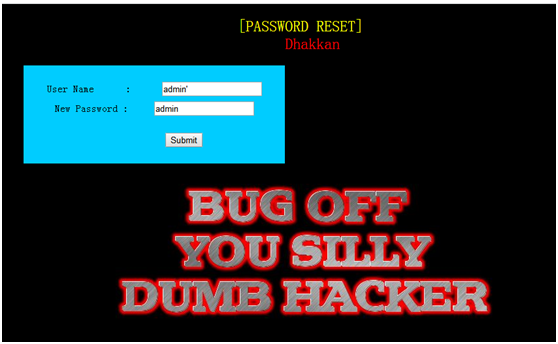
提示错误，说明查询结果为空，从txt文件可以看到
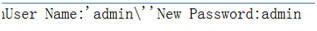
对我们输入的’进行了转义，说明username无法进行一个注入，我们再试着在用户名输入0
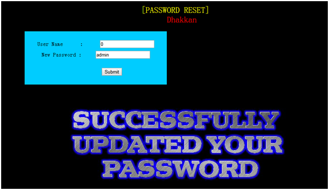
发现修改成功
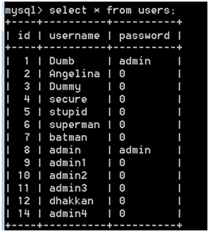
从txt文件
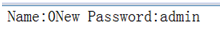
看出输入字符串为0所以没有加单引号所以这题的注入点应该是password，我们先试试
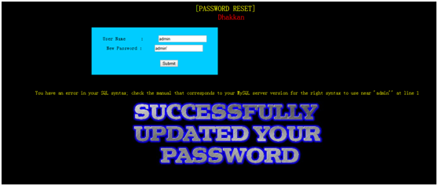
果然出现了报错信息
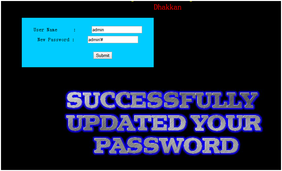
没有报错，说明password被单引号包裹,我们来试试基于报错型的注入
结果显示
再试试基于时间的报错型注入
按理来说应该会sleep 13秒，因为没有指定修改条件，会一行行的修改，而users表里有十三行，所以修改十三次。
但从结果来看并没有sleep
这是为什么呢，这个问题我也想了好久好久，最终学长点醒了我，原来是and的优先级大于=，所以先执行’admin’ and if()语句，而字符串里没有数字时是无法做and运算的，就无法执行后面的if语句
我们试着把密码加一个数字
果然结果sleep了13秒，学长建议通过where后的条件进行注入以免意外的错误
于是我们开始爆表名
爆列名
爆数据
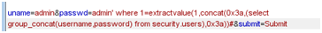
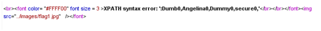